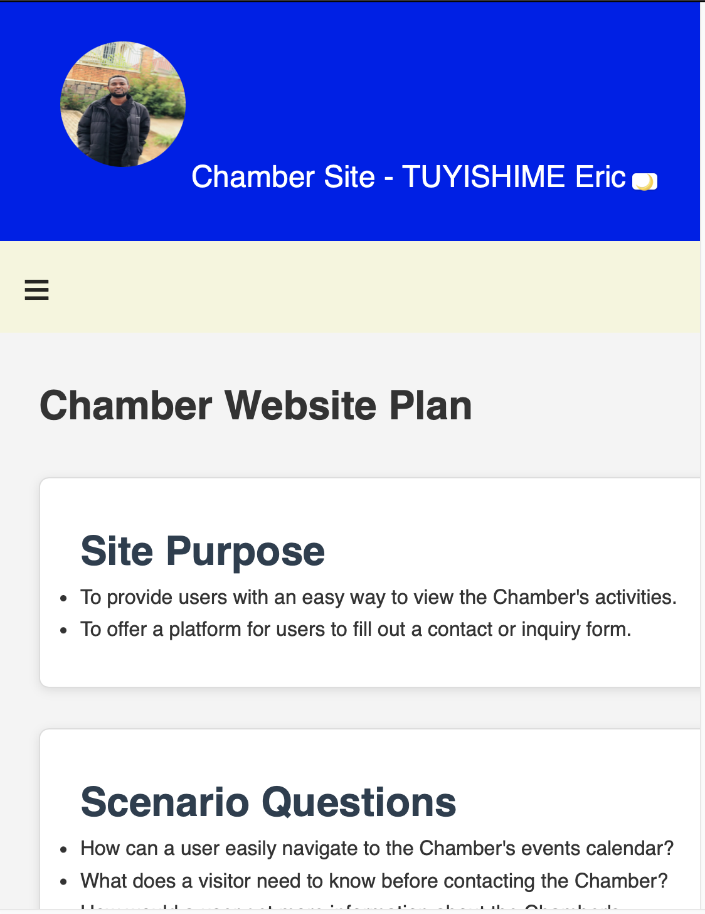
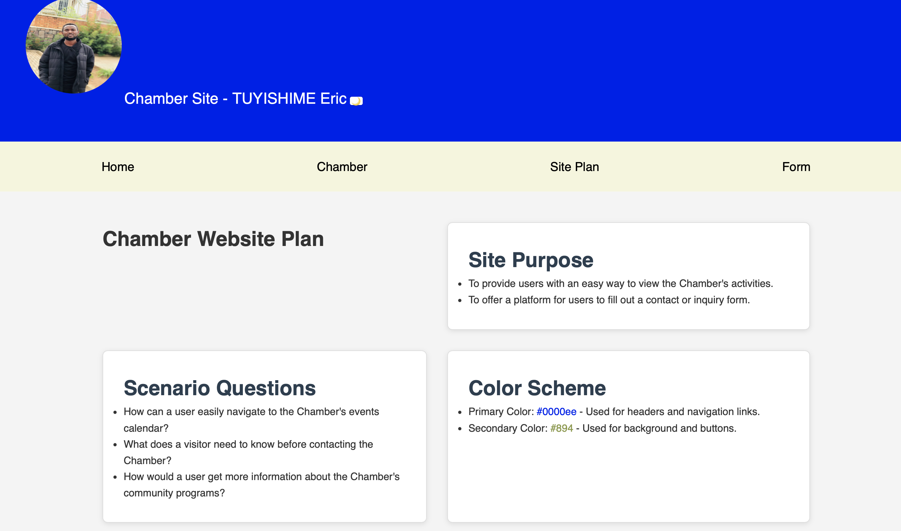

Chamber Site - TUYISHIME Eric
Chamber Website Plan
Site Purpose
- To provide users with an easy way to view the Chamber's activities.
- To offer a platform for users to fill out a contact or inquiry form.
Scenario Questions
- How can a user easily navigate to the Chamber's events calendar?
- What does a visitor need to know before contacting the Chamber?
- How would a user get more information about the Chamber's community programs?
Color Scheme
- Primary Color: #0000ee - Used for headers and navigation links.
- Secondary Color: #894 - Used for background and buttons.
Typography
- Primary Font: 'Roboto' - Used for headings and subheadings.
- Secondary Font: 'Open Sans' - Used for body text and paragraphs.
Wireframe Sketches
- Mobile View: 
- Larger View: 